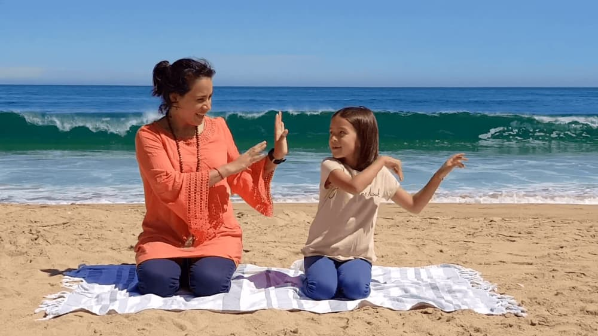

Qui sommes-nous ?

Carmen et Luz, mère et fille (Co-fondatrice de YogaKiddy) dansant sur le mantra Har Hare Hari Wahe Guru (voir vidéo ici)
Les Cartes de Yoga et le jeu YogaKiddy promeuvent une discipline intégrale de bien être à travers la pratique du yoga abordé sous forme de jeu.
Comment avons-nous commencé ?
YogaKiddy est une aventure familiale initiée en 2016 à Bruxelles, où en tant que professeur de yoga (Julie Van Brabant - fondatrice du centre de yoga Santosha Bruxelles), j'ai décidé de créer une alternative intégrant le jeu dans l'enseignement du yoga auprès de mes jeunes élèves.Depuis lors, YogaKiddy offre à des milliers de personnes du matériel éducatif facilitant la pratique du yoga, utile pour tous les professionnels qui travaillent avec des enfants, tels que : éducateurs, psychologues, logopèdes et pédiatres, entre autres. Il est également fortement recommandé pour les activités impliquant les parents, les grands-parents et la famille en général.
Après beaucoup de travail, d'amour et de dévouement nous sommes fiers d'avoir, à l'heure actuelle, plus de trois mille familles et professionnels de l'éducation qui utilisent nos outils pour enseigner le yoga aux plus petits.
YogaKiddy Academy propose également des weekend de formation au yoga pour enfants dans le monde entier. Voici les pays dans lesquels nous proposons ces formations : Espagne, Chili, Uruguay, Mexique, Pérou, France et Belgique. Conscients de l'importance de créer des alternatives qui permettent aux enfants, et à la famille en général, d'atteindre un équilibre physique et mental face au stress et à la dynamique de la vie moderne actuelle, nous continuons à développer des outils et des activités pour promouvoir cette discipline, et ses beaux enseignements, auprès des enfants et de leur entourage.
L'objectif est d'insufler des valeurs et habitudes saines dès le plus jeune âge. Et quoi de mieux que des cartes colorées les aidant non seulement à améliorer l'état physique des enfants, mais aussi leur état mental et spirituel.